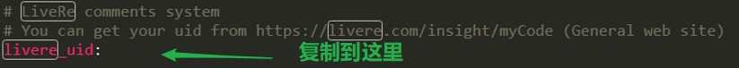

准备工作
首先新建一篇文章，在命令行输入：hexo n “文章名”，就会在博客的根目录的\source_posts下面新增一篇命名的文章，此时就可以使用Typora编辑器写博客了。
主页设置阅读全文
目前我在新版的next主题配置文件中还没找到这一项的开启方法，但是可以通过对md文章中增加一个下面的这个标签即可
1 | <!--more--> |
比如：

设置动态背景
在next/layout/_layout.swig的body结束标签之前加入这几行代码 （由于我的博客使用的是next主题，因此next是在博客根目录下themes里面的文件夹）
1 | {% if theme.canvas_nest %} |
然后在主题配置文件中的末尾加入
1 | canvas_nest: true |
然后分别执行命令：
1 | hexo clean |
重启服务器后，刷新页面就会出现动态背景的效果
添加右上角的fork Github的小猫
在下面的地址中选择好样式后复制右边多行代码，打开next/layout/_layout.swig在
1 | <div class="headband"></div> |
这个标签的下一行黏贴过去，把开头的url换成自己的github地址，然后命令行中输入命令
1 | hexo clean |

修改底部标签前面的#样式
字体图标地址：https://fontawesome.com/icons?d=gallery&q=fa-
打开next\layout_macro下面的post.swig，修改此处为i标签类名在网址中根据自己选择（需要在网址中选中并弹出字体图标网页，在图标的下面会有例如 fa fa-tag 字样，选中复制即可）。

来必力评论系统
在官网注册后，在管理页面的代码管理中，复制一般网站栏代码中的data-uid后面的代码，然后粘贴到主题配置文件中对应的位子即可

增加搜索功能
安装 hexo-generator-searchdb，在站点的根目录下执行以下命令：
npm install hexo-generator-searchdb –save
编辑根目录下的配置文件，新增以下内容到任意位置：
1 | search: |
编辑 主题配置文件，启用本地搜索功能：

添加字数统计和阅读时长
添加字数统计和阅读时长
命令行cd到根目录下执行 npm install hexo-symbols-count-time –save
如果安装完报如下提醒，还需安装eslint
1 | D:\hexo\blog>npm install hexo-symbols-count-time --save |
安装eslint npm install eslint –save
在站点配置文件添加如下配置
1 | symbols_count_time: |
在NexT主题配置文件添加如下配置（NexT主题已支持该插件，有的话无需再添加）
1 | # Post wordcount display settings |
完成后命令三连即可…
加载动画
github地址：https://github.com/theme-next/theme-next-pace
先cd到next文件夹下，然后执行
git clone https://github.com/theme-next/theme-next-pace source/lib/pace
然后在主题的配置文件下设置true开启加载动画

隐藏底部的强力驱动
最新的next主题，在主题配置文件下改power为false即可
1 | # Powered by Hexo & NexT |
更换页面的背景图片
首先在主题配置文件中找到custom_file_path字段，将最后一行的注释解开

在博客的根目录下source文件夹下新建文件夹名为_data，然后在_data文件夹下新建文件styles，将其后缀改为styl，然后将下面代码写入写入此新建文件中，并且在主题文件夹下source的images里面放一张背景图，名为background.jpg（名与下面代码中url中文件名一致）
1 | body { |
重启服务器即可
但是由于我们文章是不透明的，影响了我们的美观，我们还得修改一下透明度（代码如下，依旧放在styles.styl文件内）
1 | .content-wrap { |
完毕后分别输入命令：
1 | hexo clean |
回到顶部
在主题配置文件中搜索back2top:，我们可以看到共有三个可选配置项。其作用分别如下。
1 | back2top: |
next主题的点击爱心
创建js文件
在/themes/next/source/js/src下新建文件clicklove.js，接着把该代码拷贝粘贴到clicklove.js文件中。
代码如下：
1 | !function(e,t,a){function n(){c(".heart{width: 10px;height: 10px;position: fixed;background: #f00;transform: rotate(45deg);-webkit-transform: rotate(45deg);-moz-transform: rotate(45deg);}.heart:after,.heart:before{content: '';width: inherit;height: inherit;background: inherit;border-radius: 50%;-webkit-border-radius: 50%;-moz-border-radius: 50%;position: fixed;}.heart:after{top: -5px;}.heart:before{left: -5px;}"),o(),r()}function r(){for(var e=0;e<d.length;e++)d[e].alpha<=0?(t.body.removeChild(d[e].el),d.splice(e,1)):(d[e].y--,d[e].scale+=.004,d[e].alpha-=.013,d[e].el.style.cssText="left:"+d[e].x+"px;top:"+d[e].y+"px;opacity:"+d[e].alpha+";transform:scale("+d[e].scale+","+d[e].scale+") rotate(45deg);background:"+d[e].color+";z-index:99999");requestAnimationFrame(r)}function o(){var t="function"==typeof e.onclick&&e.onclick;e.onclick=function(e){t&&t(),i(e)}}function i(e){var a=t.createElement("div");a.className="heart",d.push({el:a,x:e.clientX-5,y:e.clientY-5,scale:1,alpha:1,color:s()}),t.body.appendChild(a)}function c(e){var a=t.createElement("style");a.type="text/css";try{a.appendChild(t.createTextNode(e))}catch(t){a.styleSheet.cssText=e}t.getElementsByTagName("head")[0].appendChild(a)}function s(){return"rgb("+~~(255*Math.random())+","+~~(255*Math.random())+","+~~(255*Math.random())+")"}var d=[];e.requestAnimationFrame=function(){return e.requestAnimationFrame||e.webkitRequestAnimationFrame||e.mozRequestAnimationFrame||e.oRequestAnimationFrame||e.msRequestAnimationFrame||function(e){setTimeout(e,1e3/60)}}(),n()}(window,document); |
修改_layout.swig，在\themes\next\layout_layout.swig文件末尾添加：
1 | <!-- 页面点击小红心 --> |
命令行分别输入：
1 | hexo clean |
完成后刷新页面即可。
后续有其他的美化操作会继续更新…
如果有什么问题或者技术交流，欢迎在下方发布渠道二维码联系我或者文章底部留言。